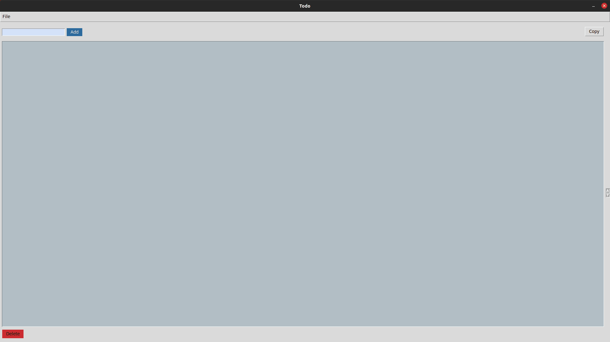

Todo GUI


It lets you add as many tasks as you want or you can use it just to save important info (emails, numbers, etc).
There is a button to delete tasks once you've completed them
This project is not finished but it's functional. There is always room for improvment and there are a lot of feautres I want to add.